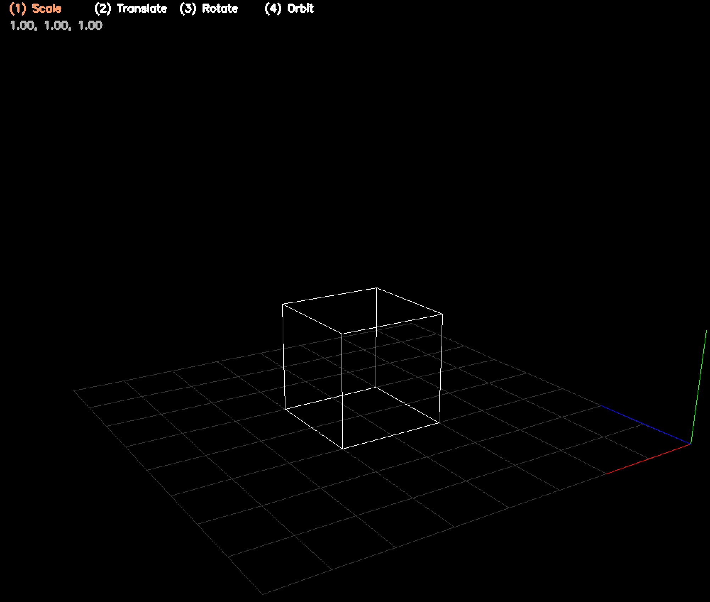
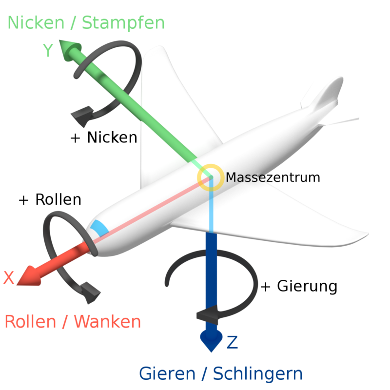
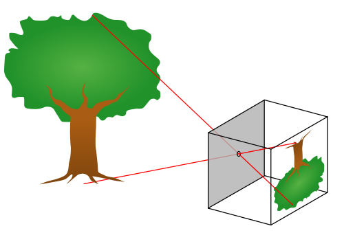
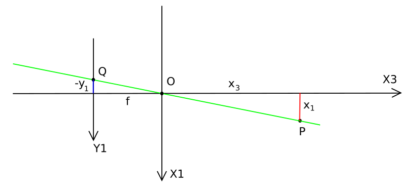
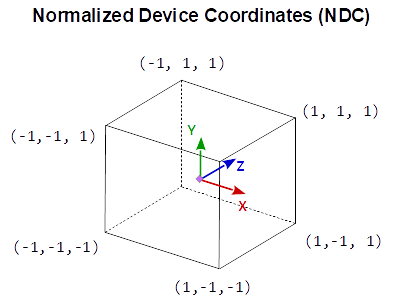
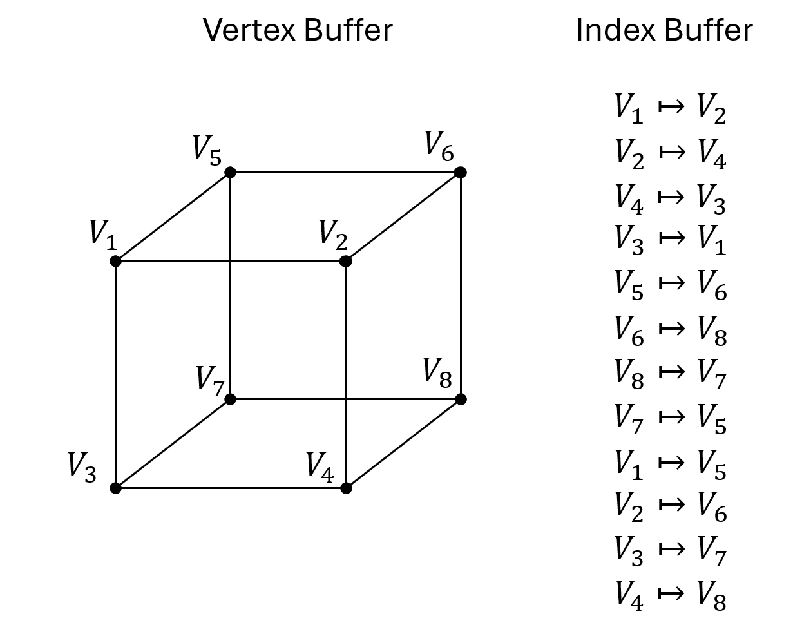

Homogene Koordinaten
Homogene Koordinaten erlauben es Verschiebungen (Translation), Rotationen (Drehungen) sowie Skalierungen (Größenänderung) einheitlich über Matrixmultiplikationen abzubilden. Die Verkettung mehrerer solcher Operationen läßt sich dann mit Hilfe des Assoziativgesetzes zu einer einzigen Matrix zusammenfassen. Die perspektivische Projektion von 3D Koordinaten auf eine zwei-dimensionale Ebene (Pinhole Kamera) läßt sich ebenfalls durch eine entsprechende Matrixmultiplikation ausdrücken. Damit lässt sich die gesame Abbildung von Objektlokalen 3D Koordinaten in Sensorlokale 2D Koordinaten direkt über eine einzige Matrix-Multiplikation ausdrücken. In diesem Praktikum betrachten wir diese Abbildungsmöglichkeiten. Wir entwickeln unsere eigene kleine 3D-Engine, welche 3D-Koordinaten über eine simulierte Kamera auf ein Bild umrechnet und damit Objekte zeichnet.
{kind=link}
Der Code
Für dieses Praktikum arbeiten Sie in der Datei
homogen.py
und implementieren nach und nach die verschiedenen Methoden. Die Erklärungen in diesem Dokument sollen Ihnen dabei helfen.
Unsere eigene kleine 3D Rendering Engine
In diesem Praktikum wollen wir eine einfache kleine 3D Rendering Engine implementieren welche Punkte im 3D über eine Kamera in 2D-Koordinaten überführt und zeichnet. Dazu orientieren wir uns stark an dem von OpenGL verwendeten Ansatz und betrachten im folgenden fünf verschiedene Koordinatensystem.

Lokale Koordinaten sind die Koordinaten des Objekts relativ zu seinem lokalen Ursprung; das sind die Koordinaten, in denen sich das Objekt anfangs befindet.
Der nächste Schritt besteht darin, die lokalen Koordinaten in Weltkoordinaten zu transformieren, also Koordinaten im Bezug auf eine globale Welt. Diese Koordinaten sind relativ zu einem globalen Ursprung der Welt, zusammen mit vielen anderen Objekten, die ebenfalls relativ zu diesem Weltursprung platziert sind.
Als Nächstes transformieren wir die Weltkoordinaten in Ansichtskoordinaten (View-Space-Koordinaten), sodass jede Koordinate aus der Sicht der Kamera oder des Betrachters dargestellt wird.
Nachdem sich die Koordinaten im View-Space befinden, möchten wir sie in NDC-Koordinaten projizieren. NDC-Koordinaten werden auf den Bereich von -1,0 bis 1,0 normiert und bestimmen, welche Scheitelpunkte (Vertices) letztlich auf dem Bildschirm erscheinen.
Schließlich transformieren wir die NDC-Koordinaten in Bildschirmkoordinaten. Dabei werden die Koordinaten von -1,0 bis 1,0 in Pixelkoordiaten im Zielbild überführt.
Einmal von euklidisch nach homogen und zurück
Eine Darstellung \(\mathcal{p}\) heißt homogen, wenn für alle \(\lambda\neq 0\) gilt :
beschreibt das selbe Objekt. Für einen Punkt in euklischen Koordinaten
schreiben wir in homogenen Koordinaten
d.h. wir fügen eine Konstante 1 in der letzten Komponente an. Diese letzte Komponente nennen wir einheitlich \(w\).
Um eine homogene Koordinate \(\mathcal{q}=(x_q, y_q, z_q, w_q)\) wieder in euklische Koordinaten zu überführen dividieren wir durch die \(w\)-Komponente und erhalten
Translationen in homogenen Koordinaten
Um einen Punkt \(\textbf{p}\) in homogenen Koordinaten um einen Vektor \(\vec v\) zu verschieben multiplizieren wir mit der folgenden Matrix
Aufgabe: Implementieren Sie die Funktion translate_3d
Lösung anzeigen
def translate_3d(x, y, z):
return np.array([
[1.0, 0.0, 0.0, x],
[0.0, 1.0, 0.0, y],
[0.0, 0.0, 1.0, z],
[0.0, 0.0, 0.0, 1.0],
])
Skalierung in homogenen Koordinaten
Um einen Punkt \(\textbf{p}\) in homogenen Koordinaten entlang der Hauptachsen zu skalieren (relativ zum Urspung \((0,0,0)\)) multiplizieren wir mit der folgenden Matrix
Aufgabe: Implementieren Sie die Funktion scale
Lösung anzeigen
def scale(x, y, z):
return np.array([
[x, 0.0, 0.0, 0.0],
[0.0, y, 0.0, 0.0],
[0.0, 0.0, z, 0.0],
[0.0, 0.0, 0.0, 1.0],
])
Mehrere Transformationen zusammenfassen
Um mehrere Transformationen nacheinander auszuführen multiplizieren wir die entsprechenden Transformationsmatrizen jeweils von links. Dabei spielt die Reihenfolge eine Rolle (Matrix-Multiplikation ist nicht kommutativ), die jeweils weiter rechts stehende Matrix wird dabei zuerst ausgeführt.
Beispiel: Zuerst verschieben, dann skalieren
Wollen wir den Punkt \((1,2,3)\) zuerst um den Vektor \((-2, -2, -2)\) verschieben und dann um den Faktor 4 gleichmässig skalieren, multiplizieren wir mit den folgenden Matrizen
Multiplizieren wir manuell von rechts nach links finden wir zunächst den verschobenen Punkt
Nach Skalierung finden wir dann mit
den finalen Punkt. Alternativ können wir mit dem Assoziativgesetz auch die beiden Matrix zuerst multiplizieren und finden
Diese Matrix kodiert die Kombination aus beiden Transformationen in der richtigen Reihenfolge.
Beispiel: Zuerst skalieren, dann verschieben
Vertauschen wir die Reihenfolge indem wir den Punkt \((1,2,3)\) zuerst um den Faktor 4 gleichmäßig skalieren und dann um den Vektor \((-2, -2, -2)\) verschieben, vertauschen wir die Matrizen
Multiplizieren wir wieder die Matrizen zuerst, finden wir eine andere Abbildungsmatrix
Hinweis: In Python können wir zwei Matrizen mit dem @-Operator multiplizieren, also
C = A @ B
Rotationen
Um einen Punkt um den Ursprung um die X-Achse zu rotieren verwenden wir die folgende Rotationsmatrix:
Für eine Rotation um die Y-Achse verwenden wir die folgende Matrix
Für eine Rotation um die Z-Achse verwenden wir die folgende Matrix
Aufgabe: Implementieren Sie die Funktionen rotateX, rotateY und rotateZ
Lösung anzeigen
def rotateX(radians):
s, c = np.sin(radians), np.cos(radians)
return np.array([
[1.0, 0.0, 0.0, 0.0],
[0.0, c, -s, 0.0],
[0.0, s, c, 0.0],
[0.0, 0.0, 0.0, 1.0],
])
def rotateY(radians):
s, c = np.sin(radians), np.cos(radians)
return np.array([
[ c, 0.0, s, 0.0],
[0.0, 1.0, 0.0, 0.0],
[ -s, 0.0, c, 0.0],
[0.0, 0.0, 0.0, 1.0],
])
def rotateZ(radians):
s, c = np.sin(radians), np.cos(radians)
return np.array([
[ c, -s, 0.0, 0.0],
[ s, c, 0.0, 0.0],
[ 0.0, 0.0, 1.0, 0.0],
[ 0.0, 0.0, 0.0, 1.0],
])
Auf die Reihenfolge kommt es an
Die Reihenfolge der Rotationen spielt eine Rolle. Daher gibt es die allgemeine Konvention Rotationen nach dem Schema
Roll (X) - Pitch (Y) - Yaw (Z)
umzusetzen.
{kind=link}
Aufgabe: Implementieren Sie die Funktionen rotateXYZ
Implementieren Sie nun die Funktion rotateXYZ, indem Sie die die Funktionen
homogen.rotateX(), homogen.rotateY() und homogen.rotateZ() in der korrekten Reihenfolge anwenden.
Lösung anzeigen
def rotateXYZ(x, y, z):
return rotateZ(z) @ rotateY(y) @ rotateX(x)
Die Projektion von 3D nach 2D
Für die Projektion unserer 3D Koordinaten auf die zwei-dimensionale Abbildungsebene verwenden wir das s.g. Pinhole-Kamera Model (Lochkameramodel).
{kind=link}
Punkte im 3D werden dabei über den Strahlensatz. abgebildet. Für einen Punkt \(P(x_1,x_2,x_3)\), wobei \(x_1\) die vertikale Komponente und \(x_3\) die longitudinale (Entfernung) darstellt finden wir die folgende Strahlensatzfigur
{kind=link}
und damit auch den Zusammenhang
oder alternativ
Dabei ist \(f\) die so genannte Brennweite. Für \(y_2\) und \(x_2\) findet sich ein entsprechender Zusammenhang. In homogenen Koordinaten ausgedrückt läßt sich diese Projektion darstellen als.
Die so erhaltenden Koordinaten sind s.g. Normalized Device Coordinates (NDC)
{kind=link}
Hierbei haben Punkte vor der Kamera ein \(z > 0\) während Punkte hinter der Kamera ein \(z < 0\) haben. Das wird später wichtig werden weil wir natürlich nur Punkte vor der Kamera zeichnen wollen.
Aufgabe: Implementieren Sie die Funktionen projection
Lösung anzeigen
def projection(c):
return np.array([
[-c, 0.0, 0.0, 0.0],
[0.0, -c, 0.0, 0.0],
[0.0, 0.0, 1.0, 0.0],
[0.0, 0.0, 1.0, 0.0]
])
Abbildung in Bild-Koordinaten (Pixel)
Um die NDC-Koordinaten in Pixelkoordinaten für unser Zielbild zu transformieren multiplizieren wir zunächst mit der halben Bildbreite bzw. Höhe und verschieben den Mittelpunkt \((0,0,0)\) dann in die Bildmitte. Dazu benötigen wir die kombinierte Matrix
Aufgabe: Implementieren Sie die Funktionen ndc_to_image
Lösung anzeigen
def ndc_to_image(W, H):
return translate_3d(W / 2.0, H / 2.0, 0.0) @ scale(W / 2.0, H / 2.0, 1.0)
Die Kameramatrix
Die Kameramatrix beschreibt, wie die Weltkoordiaten in das Kamerakoordinatensystem transformiert werden. Auch wenn die Kameramatrix in dieser Transformationsrichtung angegebenen werden muß kann es einfach er sein sich zunächst vorzustellen was mit der Kamera in der Welt passieren soll (welche Transformationen auf die Kamera angewendet werden sollen) und diese dann umzukehren. Dabei gilt ganz allgemein für zwei Transformationen
d.h. beim invertieren vertauschen die Matrizen ihre Reihenfolge. Für dieses Tutorial möchten wir die Kamera nun um 164 Einheiten nach hinten (entlang der negativen Z-Achse) und um 16 Einheiten nach unten schieben. Anschließend möchten wir zuerst 30° um die X-Achse drehen und anschließend -35° um die Y-Achse drehen. Um die Kamera in die Welt zu transformieren möchten wir also die folgenden Transformationen durchzuführen
Wie erwähnt müssen wir für die Engine jedoch die Umkehrung davon anwenden, also
Dazu vertauschen wir die Reihenfolge der Transformationen und invertieren diese jeweils einzeln. Wir finden
Aufgabe: Implementieren Sie die Funktionen world_to_camera
Implementieren Sie nun die Funktion world_to_camera
Lösung anzeigen
def world_to_camera(c):
return translate_3d(0, 16.0, 164.0) @ rotateX(np.deg2rad(-30.0)) @ rotateY(np.deg2rad(35.0))
Von lokalen Koordinaten nach Weltkoordinaten
Um die lokalen Koordinaten unseres Objektes (z.B. eines Würfels) in globale Weltkoordiaten umzurechnen verwenden wir eine Kombination von Transformation in ganz bestimmter Reihenfolge.
Zuerst wird das Objekt ggf. skaliert. Dazu kann
homogen.scale()verwendet werden.Anschließend wird das Objekt rotiert. Dabei wird nach Konvention zunächst um die X-Achse, dann um die Y-Achse und zuletzt um die Z-Achse gedreht. Dazu kann die Methode
homogen.rotateXYZ()verwendet werden.Nun wird das Objekt in seinen neuen Ursprung verschoben, dazu kann
homogen.translate_3d()verwendet werden.Zu guter letzt wird das Objekt noch einmal rotiert. Da es nun nicht mehr im Ursprung liegt rotiert es um eben diesen. Es umkeist (orbitet) somit den Ursprung des Weltkoordinatensystems. Dazu kann wieder :py:func`homogen.rotateXYZ` verwendet werden.
Aufgabe: Implementieren Sie die Funktionen local_to_world
Implementieren Sie nun die Funktion local_to_world
Lösung anzeigen
def local_to_world(c):
return rotateXYZ(objectOrbit[0], objectOrbit[1], objectOrbit[2]) @\
translate_3d(objectTranslate[0], objectTranslate[1], objectTranslate[2]) @\
rotateXYZ(objectRotate[0], objectRotate[1], objectRotate[2]) @\
scale(objectScale[0], objectScale[1], objectScale[2])
Von Weltkoordiaten nach Bildkoordinaten
Solange die Kamera, die Projektion und das Mapping in Bildkoordinaten statisch ist (sich also nicht verändert) kann die Transformation von Welt- nach Bildkoordinaten einmalig im vorraus berechnet werden.
Aufgabe: Implementieren Sie die Funktionen world_to_camera
Implementieren Sie nun die Funktion world_to_image
Lösung anzeigen
def world_to_image(W, H, c):
return ndc_to_image(W, H) @ projection(c) @ world_to_camera()
Die Datenstruktur für Geometriedaten
Um Objekte in 3D zu repräsentieren (z.B. den Würfel) verwenden wir eine spezielle Datenstruktur. Insbesondere verwenden wir einen s.g. Vertex-Buffer welcher die Koordinaten alle Eckpunkte speichert sowie einen Index-Buffer, in dem gespeichert wird welche Ecken miteinander verbunden sind.
{kind=link}
Dabei werden die Vertexkoordinaten stets in lokalen Koordinaten gespeichert und über geeignete Transformationsmatrizen später ins Weltkoordiatensystem überführt. Im konkreten Falle des Würfels sieht der Vertex-Buffer so aus
vertices = [[-1. 1. -1. 1. -1. 1. -1. 1.]
[-1. -1. 1. 1. -1. -1. 1. 1.]
[-1. -1. -1. -1. 1. 1. 1. 1.]
[ 1. 1. 1. 1. 1. 1. 1. 1.]]
während der Index-Buffer so aussieht
indices = [0 1 1 3 3 2 2 0 4 5 5 7 7 6 6 4 0 4 1 5 2 6 3 7]
Der Vertexbuffer ist also eine \(4\times n\)-Matrix, wobei \(n\) die Anzahl der Vertices angibt. Die Vertices sind dabei spaltenweise in homogenen Koordinaten gespeichert. Um alle Vertices über eine Transformationsmatrix in ein anderes Koordinatensystem zu überführen genügt es demnach den Vertexbuffer von links mit der entsprechenden Matrix zu multiplizieren.
vertices = [[-1. 1. -1. 1. -1. 1. -1. 1.]
[-1. -1. 1. 1. -1. -1. 1. 1.]
[-1. -1. -1. -1. 1. 1. 1. 1.]
[ 1. 1. 1. 1. 1. 1. 1. 1.]]
print(local_to_image @ vertices)
[[989.64 745.36 933. 688.72 912.78 668.5 856.14 611.86]
[881.22 825.4 625.49 569.67 897.81 841.99 642.08 586.27]
[ 1.72 1.49 1.58 1.34 1.89 1.65 1.74 1.51]
[ 1.72 1.49 1.58 1.34 1.89 1.65 1.74 1.51]]
In diesem Beispiel sein
local_to_image = ndc_to_image @ camera_to_ndc @ world_to_camera @ local_to_world
die Projektionmatrix welche von lokalen Koordinaten in Bildkoordinaten abbildet. Da die Koordinaten immer noch homogen sind muß noch durch die \(w\)-Komponente dividiert werden um euklische Bildkoordinaten zu erhalten.
vertices = [[-1. 1. -1. 1. -1. 1. -1. 1.]
[-1. -1. 1. 1. -1. -1. 1. 1.]
[-1. -1. -1. -1. 1. 1. 1. 1.]
[ 1. 1. 1. 1. 1. 1. 1. 1.]]
image_coordinates = local_to_image @ vertices
image_coordinates /= image_coordinates[3, :]
print(image_coordinates)
[[575.09 501.12 591.44 512.42 483.91 404.46 491.21 405.35]
[512.08 554.93 396.5 423.84 475.97 509.43 368.39 388.39]
[ 1. 1. 1. 1. 1. 1. 1. 1. ]
[ 1. 1. 1. 1. 1. 1. 1. 1. ]]
Aufgabe: Implementieren Sie die Funktionen project_vertexbuffer
Implementieren Sie nun die Funktion project_vertexbuffer
Lösung anzeigen
def project_vertexbuffer(local_to_image, vertices):
# First, project all vertices using the given transformation
vertices = local_to_image @ vertices
# Now divide by w to convert to euclidean coordinates
vertices /= vertices[3, :]
return vertices
Die Vertices zeichnen
Um die Vertices nun zeichnen zu können müssen wir im Grunde nur noch den Indexbuffer abarbeiten. Immer zwei aufeinanderfolgende Indices entsprechen dabei einer zu zeichnenden Linie. Wir können diese Logik nun implementieren.
Aufgabe: Implementieren Sie die Funktionen draw
Als erstes entpacken Sie das Tupel mesh und extrahieren Sie so den Vertex- und den Indexbuffer.
Projezieren Sie die Vertices dann mit der
project_vertexbuffer()Methode in Bildkoordinaten.Iterieren Sie dann über den Index-Buffer und laden Sie die indices der zu zeichnenden Vertices, etwa so
for lineIndex in range(0, indices.shape[0], 2): indexA = indices[lineIndex] indexB = indices[lineIndex + 1]
Laden Sie anschließend die jeweiligen Vertices aus dem projezierten Vertexbuffer, runden Sie die X- und Y-Koordinaten und verwenden Sie cv2.line um eine Linie in der angegebenen Farbe zu zeichnen.
Lösung anzeigen
def draw(mesh, local_to_image, canvas, col):
# Unpack mesh
vertices, indices = mesh
# Project vertices
vertices = project_vertexbuffer(local_to_image, vertices)
# Go through list of indices
for lineIndex in range(0, indices.shape[0], 2):
# Indirect access
indexA = indices[lineIndex]
indexB = indices[lineIndex + 1]
A = vertices[:, indexA]
B = vertices[:, indexB]
cv2.line(canvas, (int(A[0]), int(A[1])), (int(B[0]), int(B[1])), col)